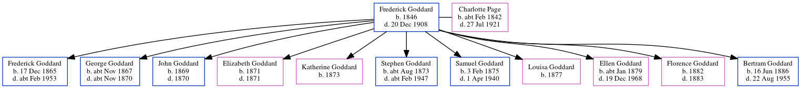

Hilda Gill (née Tunbridge) 1914 - 1983
[ Home ] | [ Calendar ] | [ Surnames Index ] | [ Errors ] | [ Family History ]The child of Harry Tunbridge (a ticket collector) and Mary Alexander, Hilda Tunbridge, the second cousin once-removed on the father's side of Nigel Horne, was born in Dover, Kent, England on 12 Apr 19141,2,3,4. She married Ernest Gill in Dover around Nov 19335.
During her life, she was living at Church Road in Dover on 19 Jun 19211 and at 31 Church Road in Dover on 29 Sept 19392 - less than a mile from her father Harry who was living at 31 Church Road in Dover.
She died on 31 Jul 1983 in Dover4.
Parents
- Harry was born on 17 Feb 1876
- Mary Norquay was born on 30 Jul 1891
Citations
- 1921 Census Of England & Wales - Findmypast (was age 7 and the daughter of the head of the household)
- 1939 Register - Findmypast (was recorded at this address)
- England & Wales births 1837-2006 - Findmypast
- England & Wales deaths 1837-2007 - Findmypast
- England & Wales Marriages 1837-2005 - Findmypast
Media
England & Wales births 1837-2006 - BMD/B/1914/2/AZ/001595/003
England & Wales marriages 1837-2005 - BMD/M/1933/4/AZ/001266/087
England & Wales deaths 1837-2007 - BMD/D/1983/3/AZ/000316/139
1939 Register - TNA-R39-1710-1710B-015-31
1921 Census of England & Wales - GBC/1921/RG15/04534/0079/03
Family Tree
Map
Generated by ged2site. Last updated on Jul 3, 2024
Known Issues
Listed in the residence for 29 Sep 1939, but spouse Ernest Gill is not